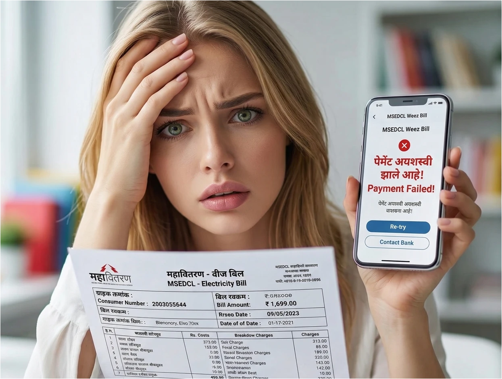

परिचय
आजच्या डिजिटल युगात वीजबिल भरणे अत्यंत सोपे झाले आहे. महावितरणचे अधिकृत ॲप, यूपीआय (UPI), नेट बँकिंग किंवा डिजिटल वॉलेट्सद्वारे आपण काही सेकंदात पेमेंट करू शकतो. मात्र, अनेकदा तांत्रिक बिघाड, सर्व्हर डाऊन असणे किंवा नेटवर्कच्या समस्येमुळे ऑनलाईन पेमेंट अयशस्वी (Failed) होते. अशा वेळी बँक खात्यातून पैसे कटतात, पण बिलाची पावती मिळत नाही. या परिस्थितीत घाबरून न जाता कोणत्या कायदेशीर आणि तांत्रिक पायऱ्या वापराव्यात, याची सविस्तर माहिती या लेखात देण्यात आली आहे.
१. वीज बिलाचे ऑनलाइन पेमेंट अयशस्वी होण्याची कारणे आणि तांत्रिक अडचणी.
Key Takeaways
- पेमेंट अपयशामागे बँक सर्व्हर टाइमआऊट, चुकीचा पिन किंवा महावितरणच्या पेमेंट गेटवेवरील ओव्हरलोड ही मुख्य कारणे असतात.
डिजिटल ट्रान्झॅक्शन फेल होण्यामागे अनेक तांत्रिक घटक कारणीभूत असतात, जे युझर्सनी समजून घेणे गरजेचे आहे:
- बँक किंवा NPCI सर्व्हर डाऊन असणे: जेव्हा एकाच वेळी लाखो लोक यूपीआय (UPI) चा वापर करत असतात, तेव्हा सर्व्हरवर ताण येऊन ट्रान्झॅक्शन रखडते.
- पेमेंट गेटवे टाइमआऊट: संथ इंटरनेट स्पीडमुळे ठराविक सेकंदांत पेमेंट प्रोसेस पूर्ण न झाल्यास गेटवे सुरक्षा कारणास्तव व्यवहार रद्द करतो.
- अपूर्ण केवायसी (KYC) किंवा मर्यादा: बँक खाते अथवा वॉलेटची दैनिक व्यवहार मर्यादा संपली असल्यास पेमेंट फेल होते.
तुम्हाला कधी वीजबिल भरताना अशा प्रकारच्या तांत्रिक अडचणीचा सामना करावा लागला आहे का?
२. अयशस्वी ट्रान्झॅक्शन: बँक आणि महावितरणची तक्रार प्रक्रिया.
Key Takeaways
- पैसे कटल्यास सर्वप्रथम स्वतःच्या बँकेकडे आणि त्यानंतर महावितरणच्या अधिकृत पोर्टलवर तक्रार नोंदवणे आवश्यक असते.
खात्यातून रक्कम वजा झाली पण बिलात जमा झाली नसेल, तर खालील चरणांनुसार अधिकृत तक्रार नोंदवावी:
- 1 बँकेत 'डिसप्युट' फॉर्म भरणे: तुमच्या बँकेच्या ॲपमधून किंवा शाखेत जाऊन 'Chargeback' किंवा ट्रान्झॅक्शन डिसप्युट रेझ करा.
- 2 महावितरण पोर्टलवर तक्रार: महावितरणच्या अधिकृत वेबसाईटवर 'History' किंवा 'Helpdesk' सेक्शनमध्ये जाऊन ग्राहक क्रमांक आणि बँक ट्रान्झॅक्शन डिटेल्ससह ऑनलाईन तक्रार नोंदवावी.
पैसे कटल्यावर तुम्ही बँकेच्या टोल-फ्री नंबरवर त्वरित तक्रार नोंदवता का?
३. वीजबिल पेमेंट अपडेट होण्यासाठी किती वेळ लागतो?
Key Takeaways
- यशस्वी पेमेंटनंतरही प्रणालीमध्ये (System) बिल अपडेट होण्यासाठी काही तासांपासून ते ३ कार्यालयीन दिवसांपर्यंतचा वेळ लागू शकतो.
घाईघाईने पुन्हा पेमेंट करण्यापूर्वी वेगवेगळ्या पेमेंट मोडनुसार लागणारा संभाव्य वेळ समजून घ्या:
| पेमेंटचा प्रकार (Mode) | सामान्य वेळ (Settlement Time) | पैसे अडकल्यास परतावा मिळण्याचा काळ |
|---|---|---|
| महावितरण ॲप / UPI | त्वरित किंवा २ तास | ३ ते ५ बँक कामकाजाचे दिवस (Working Days) |
| नेट बँकिंग (Net Banking) | २४ ते ४८ तास | ५ ते ७ बँक कामकाजाचे दिवस |
| थर्ड पार्टी ॲप्स (GPay/PhonePe) | २४ तास | बँकेच्या नियमांनुसार ३ ते ७ दिवस |
तुम्ही पेमेंट केल्यानंतर महावितरणकडून येणाऱ्या कन्फर्मेशन एसएमएसची वाट पाहता का?
४. ऑनलाईन वीजबिल पेमेंटमध्ये ट्रान्झॅक्शन आयडी व स्क्रीनशॉटचे महत्त्व.
Key Takeaways
- ट्रान्झॅक्शन आयडी (Transaction ID) आणि युटीआर (UTR) नंबर हा तुमच्या पेमेंटचा एकमेव कायदेशीर तांत्रिक पुरावा असतो.
कोणताही डिजिटल व्यवहार करताना त्याचे डिजिटल रेकॉर्ड ठेवणे खालील कारणांसाठी अत्यंत महत्त्वाचे आहे:
- 1 पुरावा म्हणून उपयुक्त: पेमेंट फेल झाल्याचा स्क्रीनशॉट, ज्यावर डेट, टाईम आणि प्रलंबित (Pending/Failed) स्टेटस स्पष्ट दिसेल, तो भविष्यातील संदर्भासाठी सेव्ह ठेवावा.
- 2 जलद निवारण: तक्रार दाखल करताना UTR किंवा Ref No. प्रदान केल्यास बँक किंवा वीज वितरण कंपनीला तो व्यवहार ट्रॅक करणे अत्यंत सोपे जाते.
तुम्ही प्रत्येक यशस्वी किंवा अयशस्वी पेमेंटचा स्क्रीनशॉट सुरक्षित ठेवता का?
५. वीजबिलाचे दोनदा पेमेंट झाल्यास त्याचे समायोजन कसे केले जाते?
Key Takeaways
- घाईगडबडीत दोन वेळा पैसे भरले गेल्यास काळजी करू नका; अतिरिक्त भरलेली रक्कम पुढील महिन्याच्या बिलात वजा (Adjust) केली जाते.
अनावधानाने किंवा पेमेंट अपडेट न झाल्यामुळे एकाच बिलाचे दोनदा पैसे वजा झाल्यास महावितरणच्या नियमांनुसार खालीलप्रमाणे प्रक्रिया होते:
- पुढील बिलात क्रेडिट (Credit Adjustment): भरलेली जास्तीची रक्कम महावितरणच्या मुख्य लेझर खात्यात जमा राहते आणि पुढील महिन्याचे बिल येताना तेवढी रक्कम आधीच वजा होऊन उर्वरित रकमेचे बिल आपल्याला मिळते.
- रिफंड मिळवणे: जर रक्कम खूप मोठी असेल तर ग्राहकाला संबंधित वीज उपविभागीय कार्यालयात (Sub-division Office) अर्ज देऊन बँक खात्यात परतावा मिळवता येतो.
तुम्हाला माहिती आहे का की जास्तीचे भरलेले पैसे महावितरणकडे पूर्णपणे सुरक्षित राहतात?
६. कस्टमर केअर हेल्पलाईनची मदत कशी घ्यावी?
Key Takeaways
- महावितरणच्या २४/७ कार्यरत टोल-फ्री क्रमांकावर कॉल करून ग्राहक त्यांच्या अयशस्वी व्यवहाराची सद्यस्थिती जाणून घेऊ शकतात.
तांत्रिक अडचण सोडवण्यासाठी आणि अधिकृत मार्गदर्शनासाठी ग्राहक खालील अधिकृत माध्यमांचा वापर करू शकतात:
- 1 टोल-फ्री क्रमांक: महावितरणच्या **1912**, **1800-212-3435** किंवा **1800-233-3435** या क्रमांकांवर संपर्क साधून तुमच्या तक्रारीचा टोकन क्रमांक मिळवा.
- 2 ईमेल सपोर्ट: तुमच्या पेमेंटचे तपशील **customercare@mahadiscom.in** वर ईमेल करून देखील लेखी नोंद ठेवली जाऊ शकते.
महावितरणचा '1912' हा मध्यवर्ती हेल्पलाईन क्रमांक तुमच्या मोबाईलमध्ये सेव्ह आहे का?
७. अयशस्वी वीजबिल पेमेंटनंतर पुन्हा पेमेंट करण्यापूर्वी घ्यावयाची काळजी.
Key Takeaways
- पेमेंट फेल झाल्या-झाल्या लगेच पुन्हा प्रयत्न करणे टाळावे, अन्यथा दुहेरी डेबिट (Double Debit) होण्याची शक्यता वाढते.
भविष्यात होणारा मनस्ताप आणि आर्थिक गुंतागुंत टाळण्यासाठी पुन्हा वीजबिल भरण्यापूर्वी या गोष्टी नक्की तपासा:
- बँक बॅलन्स आणि स्टेटमेंट: आधीच्या व्यवहाराचे पैसे खरोखरच कट झाले आहेत की बँक खात्यातच राहिले आहेत, हे बँक स्टेटमेंट किंवा पासबुक तपासून निश्चित करा.
- प्रतीक्षा कालावधी (Cooling Period): पेमेंट गेटवे अडकले असल्यास कमीत कमी ३० मिनिटे ते २ तास प्रतीक्षा करा, अनेकदा प्रलंबित (Pending) असलेले पेमेंट नंतर आपोआप 'Success' होते.
- विश्वसनीय नेटवर्क: पुन्हा पेमेंट करताना मोबाईलचे इंटरनेट कनेक्शन स्थिर आणि सुरक्षित वाय-फाय/मोबाईल डेटावर असल्याची खात्री करून घ्या.
पुन्हा पेमेंट करण्याचा प्रयत्न करण्यापूर्वी तुम्ही बँक खात्याचे स्टेटमेंट तपासता का?
महत्त्वाचे निष्कर्ष
ऑनलाइन पेमेंट फेल झाल्यास पैसे सहसा सुरक्षित असतात आणि रिझर्व्ह बँकेच्या (RBI) नियमांनुसार ते ठराविक दिवसांत खात्यात परत येतात.
कोणत्याही वादाच्या प्रसंगी ट्रान्झॅक्शन आयडी (Transaction ID) आणि स्क्रीनशॉट हेच तुमचे मुख्य तांत्रिक हत्यार ठरतात.
पेमेंट फेल झाल्यानंतर लगेच घाईगडबडीत पुन्हा पुन्हा पैसे भरणे तांत्रिकदृष्ट्या चुकीचे असून, त्यामुळे खात्यातून एकापेक्षा जास्त वेळा पैसे कटू शकतात.
पुढचं पाऊल:
पुढच्या वेळी वीजबिल भरताना बिलाच्या अंतिम तारखेच्या (Due Date) किमान २-३ दिवस आधी पेमेंट पूर्ण करा, जेणेकरून तांत्रिक अडचण आल्यास बिल अपडेट होण्यासाठी पुरेसा वेळ मिळेल. पेमेंटसाठी नेहमी महावितरणचे अधिकृत 'WSS' पोर्टल किंवा अधिकृत मोबाईल ॲप वापरण्यास प्राधान्य द्या.
People Also Ask
जर पैसे महावितरणकडे जमा झाले नाहीत, तर ते तुमच्या बँकेच्या 'सस्पेन्स अकाउंट'मध्ये अडकतात. रिझर्व्ह बँकेच्या नियमांनुसार, असे पैसे सामान्यतः ३ ते ५ कामकाजाच्या दिवसांत तुमच्या मूळ बँक खात्यात आपोआप जमा (Auto-Refund) होतात.
बिलाची अंतिम मुदत संपल्यानंतरही पेमेंट अपडेट झाले नाही, तर तांत्रिकदृष्ट्या बिल थकीत दिसते. अशा वेळी जर तुमच्याकडे बँक खात्यातून पैसे कटल्याचा अधिकृत पुरावा (Transaction Details) असेल, तर स्थानिक वीज कार्यालयात तो दाखवून तुम्ही कायदेशीर संरक्षण मिळवू शकता आणि कारवाई टाळू शकता.
स्टेटस 'Pending' असल्यास याचा अर्थ बँकांकडून अंतिम मंजुरीची प्रतीक्षा आहे. अशा वेळी २४ तास थांबावे. एकतर व्यवहार यशस्वी होऊन बिल भरले जाईल किंवा व्यवहार फेल होऊन पैसे तुमच्या खात्यात परत येतील.